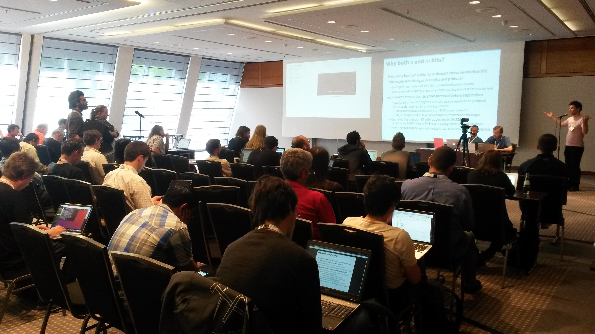

Standards
Einführung zu Internet- und Webstandards
Author: Jonas Jared Jacek · License: CC BY-NC-ND 4.0Themen
- Was sind Standards?
Überblick über Standards im Internet. Definitionen, Beispiele und Links. - Wer macht Standards?
Informationen zu Normungsgremien. Strukturen, Standards und Links. - Vorteile durch Standards?
Warum die Nutzung von Standards wichtig ist. Was Entscheider wissen müssen. - Diskussion
Beantwortung von Fragen. Diskussion zur Nutzung von Standards.
Was sind Standards?
Ein Überblick über Standards im Internet.
Unterscheidungen
- Internetstandards
- Webstandards
- Best (Current) Practices
Internetstandards
Technische Spezifikationen, die ...
- Funktionsweisen des Internet beschreiben
- einen sehr hohen Reifegrad haben
- von einer breiten Öffentlichkeit unterstützt werden.
Beispiele für Internetstandards
Webstandards
Technische Spezifikationen, die ...
- Funktionsweisen des World Wide Web beschreiben
- einen sehr hohen Reifegrad haben
- von einer breiten Öffentlichkeit unterstützt werden.
Beispiele für Webstandards
Übersicht
Internet Standards
Web Standards
Best (Current) Practices
Sind (nicht)technische Spezifikationen, die ...
- flexibler sind als Standards
- Diskussionen anregen und ermöglichen sollen
- keine Standards werden können.
Beispiele für Best (Current) Practices
Übersicht
Internet Standards
Web Standards
BCP
Wer Macht Standards?
Informationen zu Normungsgremien im Internet.
Normungsgremien
- Internet Engineering Task Force (IETF)
Entwickelt und publiziert Internetstandards und Best Current Practices. - World Wide Web Consortium (W3C)
Entwickelt und publiziert Webstandards. - International Organization for Standardization (ISO)
Entwickelt und (re)publiziert allgemeine Standards, Internet- und Webstandards. - etc.
Internet Engineering Task Force (IETF)
| Webseite | https://ietf.org/ |
|---|---|
| Standards | TCP, IP, HTTP, DNS, etc. |
| Mitglieder | 80.000+ Personen |
Mitglieder (Beispiel)
- Jari Arkko, Ericsson
- Ben Campbell, Oracle
- Benoit Claise, Cisco
- Deborah Brungard, AT&T
- Stephen Farrell, Trinity College Dublin
- Kathleen Moriarty, Dell EMC
- Mirja Kühlewind, ETH Zurich
- …
IETF - Working Group
World Wide Web Consortium (W3C)
| Webseite | https://www.w3.org/ |
|---|---|
| Standards | HTML, XML, CSS, SVG, WCAG, etc. |
| Mitglieder | 451 Organisationen |
Mitglieder (Beispiel)
- Arron Eicholz, Microsoft
- Alex Danilo, Google
- Edward O'Connor, Apple Inc.
- Jonathan Watt, Mozilla Corporation
- Erik Dahlström, Opera Software
- Anthony Grasso, Canon Inc.
- Steve Faulkner, The Paciello Group
- …
W3C - Multilingual Web Workshop
International Organization for Standardization (ISO)
| Webseite | https://www.iso.org/ |
|---|---|
| Standards | WCAG, MathML, ISO 639, ISO 3166, etc. |
| Mitglieder | 162 Länder |
Gemeinsamkeiten
- Gesellschaftlich breit aufgestellt
Regierungsvertreter, Akademiker (R&D), Privatunternehmen, Organisationen, … - Offene Prozesse
(Größtenteils) transparente Prozesse, Beteiligung/Feedback ist möglich und gefordert. - Freie Nutzung
Standards sind frei zugänglich, kostenfreie Nutzung, weite Verbreitung ist angestrebt.
Vorteile Durch Standards?
Vorteile durch die Nutzung von Standards.
Grundwortschatz
Standards entsprechen den Sprachen des Internet und des World Wide Web. Sie harmonisieren das Senden und Empfangen von Informationen.
Mitsprache
Wenn Sie mitsprechen wollen, müssen Sie Standards beherrschen.
Verständigung
Erst die gemeinsam gesprochenen Sprachen ermöglichen Kommunikation zwischen den verschiedenen Akteuren.
Akteure sind zum Beispiel …
- Benutzer
Konsumenten, Content Provider, … - Browser Software
Firefox (Gecko), Chrome (Webkit), Internet Explorer (Trident), Edge (EdgeHTML), … - Web Applications
Suchmaschinen, Online Shops, Soziale Netzwerke, … - Content Provider
Verlagswebseiten, Video-Plattformen, Informationsportale, …
Beispiel
Web Application // Content Provider
Suchmaschine crawlt Inhalte von Verlagswebseite.
- Internetstandards
IP, DNS, HTTP, … - Webstandards
HTML, WCAG, Microdata, CSS, … - Best (Current) Practices
Robots Exclusion Protocol (Robots.txt), Language Codes, …
Wirkungsbereiche
- Interoperabilität
Funktionalität, Plattformunabhängigkeit, Geräteunabhängigkeit, … - Sicherheit
Verschlüssselung (SSL), Privatsphäre (DNT), … - User-Experience
Informationsfluss, Geschwindigkeit, Interface Design, … - Marketing
Search Engine Optimization (SEO), Search Engine Advertising (SEA), …
Wichtig
Standards zu beherrschen ist eine Vorraussetzung für den Erfolg eines jeden Akteurs.
Worauf sollten Sie achten?
Empfehlung 1
Sie sollten die Standards kennen, die für Ihr Produkt/Ihren Markt wichtig sind.
Empfehlung 2
Sie sollten sich regelmäßig über Standards, die für Ihr Produkt/Ihren Markt wichtig sind, informieren.
Dem Markt vorraus sein: Gucken Sie, welche Standards neu entstehen (RFC's).Empfehlung 3
(Externe) Mitarbeiter sollten die Standards, die für Ihr Produkt/Ihren Markt wichtig sind, kennen und beherrschen.
Zu oft wird veraltetes und/oder falsches Wissen angewendet.Empfehlung 4
Fordern Sie die (fehlerfreie) Nutzung von konkreten Standards wenn Sie Leistungen kaufen (z.B. Hosting, HTML-Templates, Landingpages, …)
Überprüfbarkeit und Bewertung der Qualität: Bestellte Leistung = erbrachte Leistung?Diskussion
Fragen & Diskussion zur Nutzung von Standards.
Kontakt
Weitere Informationen und Kontaktdaten unter: